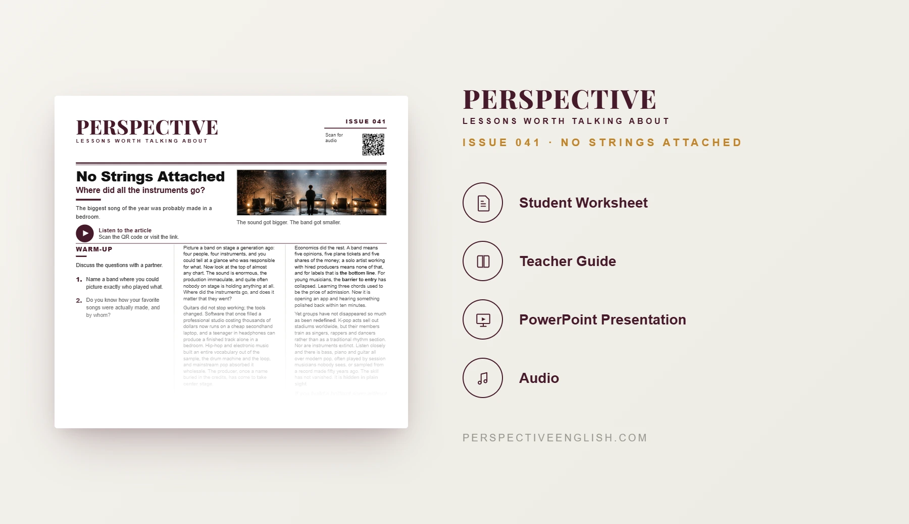

ISSUE 041
Modern Music Instruments ESL Lesson
Where did all the instruments go?
A ready-to-teach C1–C2 ESL lesson examining how digital production, sampling and economic pressures have redefined modern musicianship, and whether making music requires playing an instrument.
CHOOSE YOUR LEVEL
Collection 08 includes Issues 041–045.

LESSON PREVIEW

ABOUT THIS LESSON
About This Modern Music ESL Lesson
This advanced C1–C2 lesson explores how software, sampling and the rise of producers have transformed popular music, shifting much of the craft away from the stage and into the studio.
Students read and listen to an original article, analyze five advanced expressions, and assess claims about music technology, economics and K-pop. Discussion questions challenge assumptions about originality, visibility and skill.
Groups evaluate eight musician profiles and defend a consistent definition of musicianship. They then pitch a four-person music act under challenge, practice expressions in context and write a 200–250 word argument that addresses an opposing view.
FROM THE ARTICLE
WHAT'S INCLUDED
What's Included in No Strings Attached?
- Magazine-style C1–C2 ESL student worksheet
- Original advanced article about modern music production and matching audio recording
- Five advanced expressions and inference-based true-or-false comprehension
- Five discussion questions about musical skill, sampling, bands and technology
- Who Counts as a Musician? critical-thinking task: evaluate eight profiles and defend a consistent rule
- Language in Context with take center stage, the bottom line, barrier to entry, redefine and hidden in plain sight
- Four-person music-act speaking challenge: propose your lineup and defend it against objections
- 200–250 word opinion-writing task addressing the strongest opposing view
- Teacher guide and complete answer key
- Ready-to-use classroom presentation
GET THE COMPLETE LESSON
Ready to Teach No Strings Attached?
Get the complete C1–C2 modern music ESL lesson individually, or get Issues 041–045 together in Perspective Collection 08.
Secure checkout and instant digital delivery through Payhip.